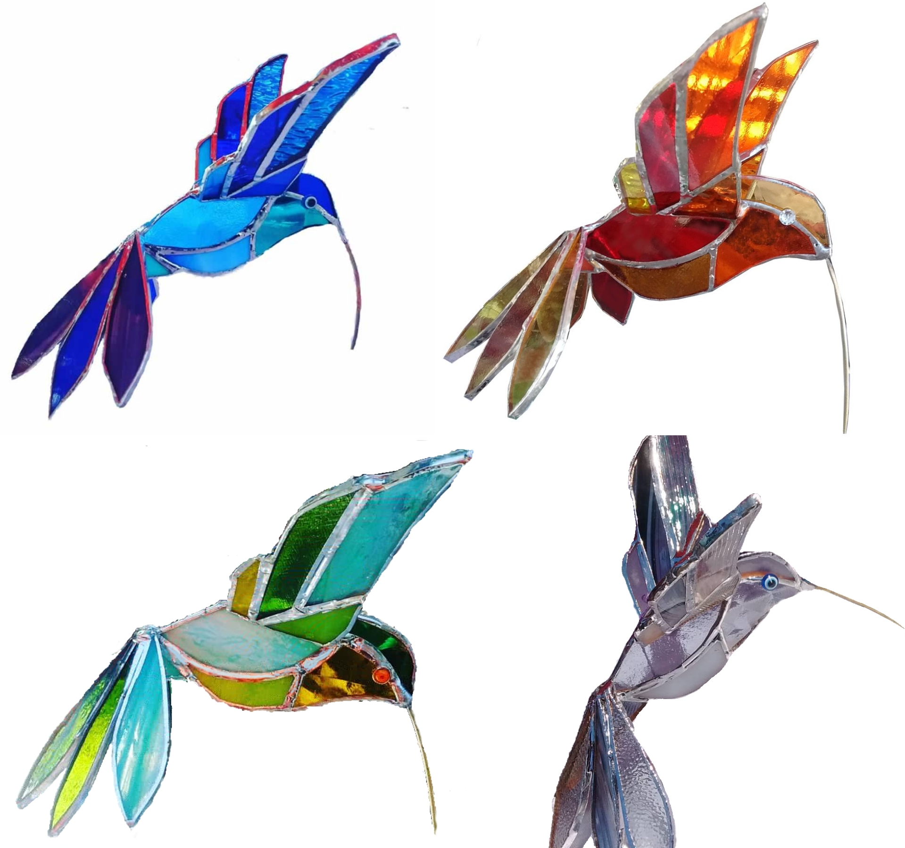
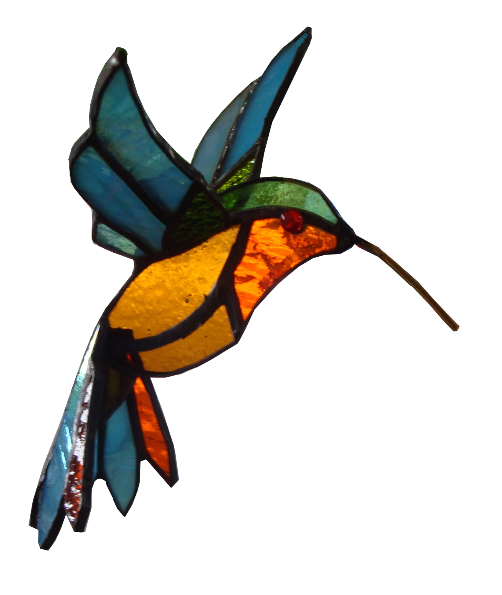
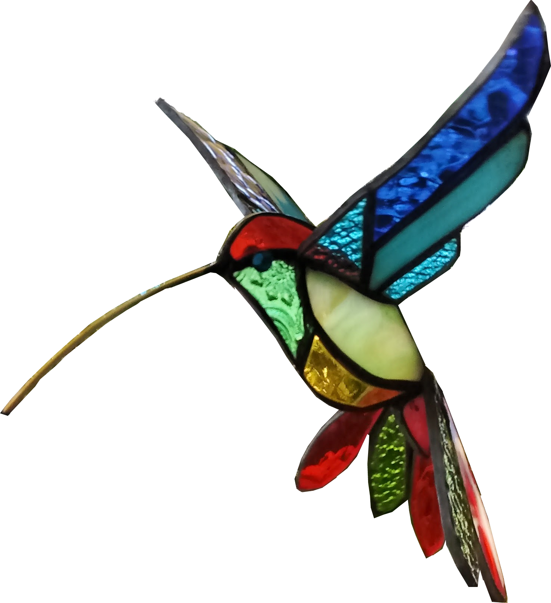

Colibrí 3D realizado en la técnica de vitraux Tiffany con vidrios artesanales. Los colores pueden ser variados. Se realizan estilos más minimalistas con diferente tipos de vidrios lisos y texturados dentro de una misma gama de colores o líneas más eclécticas con vidrios multicolores.



Si gustas puedes pedir tu propia gama de colores personalizadas o nuestras propias creaciones que por el momento tenemos en stock según la siguiente tabla:
| Color | Cantidad |
|---|---|
| Verdes | 2 |
| Azules | 4 |
| Multicolor | 3 |
| Rojos | 2 |
También puedes pedir otros pájaros como:
- Abejorros
- Cardenales
- Loros
- Tucanes
- Mariposas
...Y todo aquello que te inspire tu imaginación nosotrxs lo hacemos realidad!